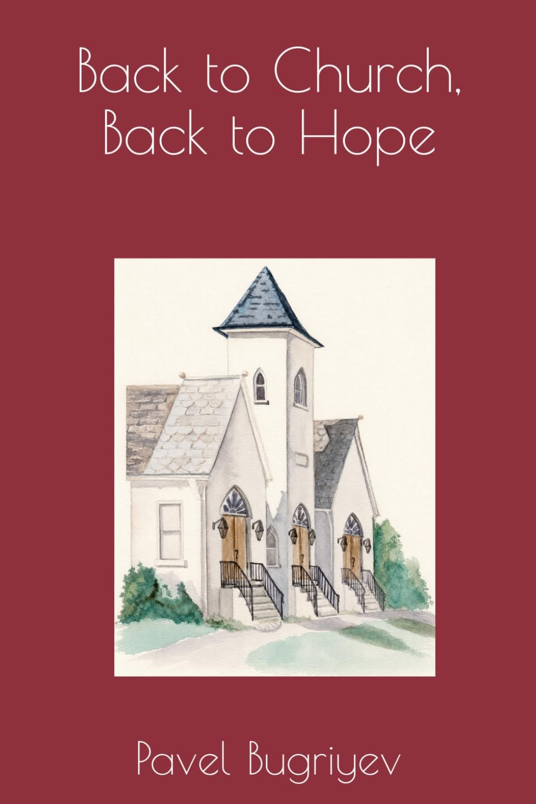

- Author: Pavel Bugriyev, PhD
- Category: Christian nonfiction
- Formats: Paperback and Kindle (Kindle Unlimited)
- Paperback ISBN: 9798198651579
- Published: May 2026
The book
Back to Church, Back to Hope
How In-Person Church, Prayer, and Christian Community Build Hope in a Stressed-Out World
During the pandemic, church became something many of us watched. For the sick, the elderly, and the homebound, that screen was a genuine mercy, and this book says so plainly. But after years of isolation, anxiety, grief, and disconnection, a deeper question remains: what happens when believers gather again in the same room?
Pavel Bugriyev’s doctoral study surveyed 271 U.S. adults: people who attended church in person, people who attended online, and people who did not attend at all. Those who gathered in person reported lower post-pandemic stress and higher hope, meaning-making, and social support. On stress, those who watched from home looked more like those who stayed away than like those who came through the doors.
The book reads that research in the light of Scripture’s call to meet together, pray for one another, and bear one another’s burdens. It is careful about what the study can and cannot show, and it never treats church as a cure or a substitute for medical care. Instead, it shows how God uses worship, prayer, fellowship, pastoral care, and small groups to sustain hope when life is hard.
Inside the book
Four parts
- What We Lost When Church Became a ScreenThe Sunday the world stayed home, the stress nobody could see, and the question behind the research.
- The Gifts of GatheringStress, hope, meaning, and support in the light of Scripture, and why being in the room matters.
- Stories of Hope, Illness, Addiction, and TraumaWhen the diagnosis comes, when addiction breaks a family, when trauma makes you hide, and when church itself hurts.
- The Way BackA gentle plan for returning to church, and the courage to hold faith and medicine together.
Resources in the back
- A thirty-day Return-to-Hope practice guide
- Prayers for the way back
- A six-week course outline for small groups and classes
- Help for pastors and leaders building a caring, resilient congregation
- A plain-language summary of the study
Who it’s for
- Tired believers and cautious returners who suspect they need community but aren’t sure how to come back
- Pastors and church leaders rebuilding congregational life after the pandemic
- Biblical counselors and caregivers who want to care for stressed and isolated people from the Scriptures, within the life of the local church
- Small groups who want to read and talk through it together
“The screen may deliver a sermon. But the gathered church gives us something more: people who know our names, carry our burdens, hear our voices, and help us remember that hope has a body.” — from the Introduction, Back to Church, Back to Hope
A note of care: this book is written for spiritual and pastoral encouragement. It is not medical advice and is not intended to diagnose, treat, cure, or prevent any medical condition.